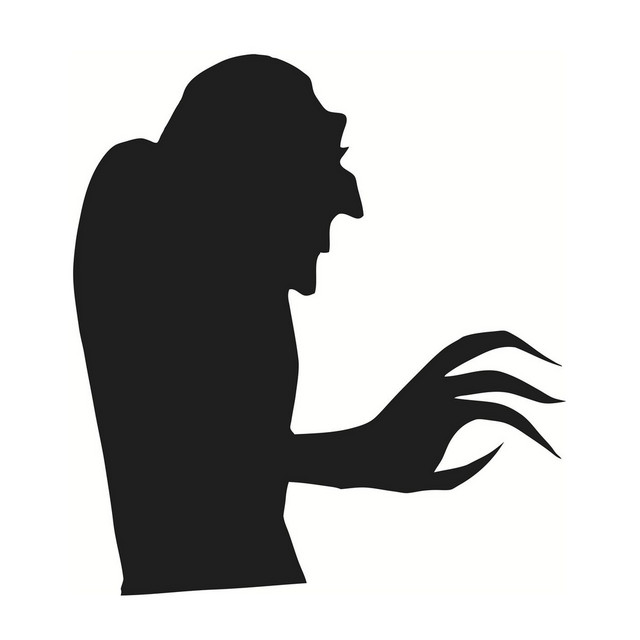

Su identidad real no es muy conocida, ya que prefiere mantener un aire de misterio alrededor de su personaje artístico. Desde joven mostró interés por el cine de terror y la música experimental, lo que influyó en su estilo sombrío y atmosférico. Es alguien que disfruta explorar nuevas formas de expresión a través del sonido, siempre buscando llevar su arte a un terreno fuera de lo convencional.
